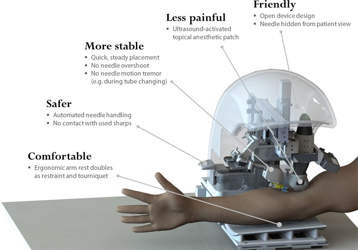

safely, accurately and consistently draw blood or deliver intravenous fluids
VenousPro™ How It Works
Interface
The practitioner interacts with VenousPro™ via an intuitive touchscreen interface.
Imaging & Target Selection
Infrared and ultrasound imaging are used to select suitable target insertion sites.
Precision Execution
With real-time guidance from the imaging system, the needle is robotically inserted into the vein at the target site.
VenousPro™ implements a Smart Guidance System that recognizes, labels and assesses the suitability of target veins
